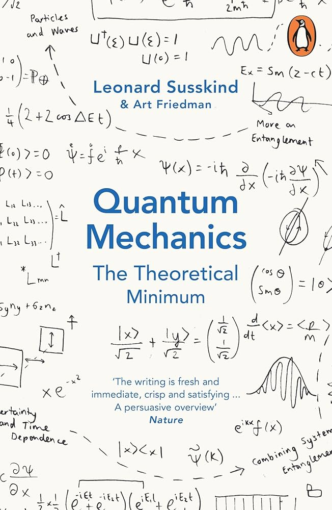

📖《量子力学：理论最小值》是理论物理学家Leonard Susskind的入门著作，以最精简的方式讲解量子力学的核心概念和数学框架，是"理论最小值"系列的第二本。
应该是我见过最精简的量子力学的书了。
Susskind的"理论最小值"系列理念是：用最少的数学，讲清楚物理的核心思想。这本书做到了。它不追求面面俱到，而是抓住量子力学最本质的概念：态矢量、算符、纠缠、不确定性原理。
读完这本书，我对量子力学有了"理解"而非"记忆"。Susskind不满足于告诉你"量子力学是这样的"，而是解释"为什么量子力学必须是这样"。这种从第一性原理出发的讲解方式，让我真正理解了薛定谔方程为什么是这个形式、测量为什么会导致波函数坍缩。这本书适合有一定线性代数基础的读者，它不会把你淹没在公式里，但也不会因为简化而牺牲严谨性。